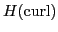
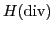
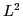

The Darcy and the Brinkman equations are two fundamental models
describing the dynamics of an inviscid (Darcy) or viscid (Brinkman) fluid
in a matrix of an inhomogeneous porous medium, alternating bubbles and
open channels. Typical applications of these models are in underground
water hydrology, petroleum industry, automotive industry, and biomedical
engineering. In these applications, the high variability in the PDE
coefficients, that may take extremely large or small values, negatively
affects the conditioning of the discrete problem which poses a
substantial challenge for developing accurate and efficient solvers.
In this talk, we consider mixed formulations of the Darcy and Brinkman
equations based on the de Rham sequence

-
-
. We first give a brief overview of our previous results for their finite element discretizations with Nédélec, Raviart-Thomas and piecewise discontinuous elements and for the construction of respective block-diagonal AMG preconditioners. The theoretical results are illustrated with numerical experiments. Then we outline some progress towards the construction of specialized coarse space correction exploiting an element-based algebraic multigrid approach (AMGe) aimed at ensuring better robustness of the resulting preconditioners.This talk is based on a joint work with Ilya Lashuk and Panayot Vassilevski.